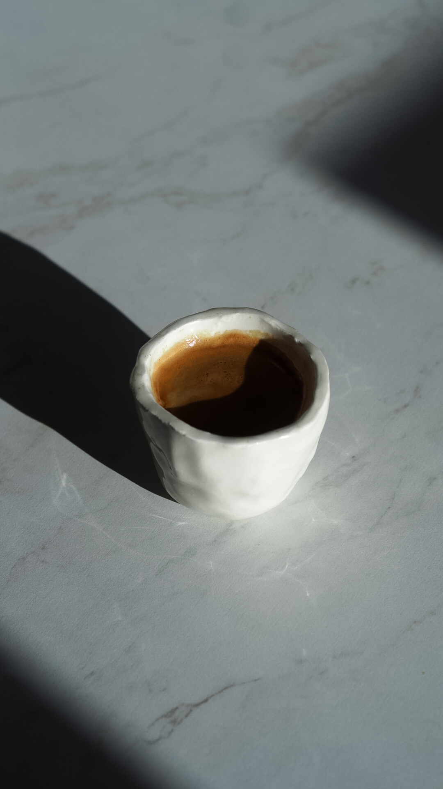

Espresso

Espresso - to intensywny i aromatyczny napój kawowy o wyjątkowo
bogatym smaku. Przygotowywany pod wysokim ciśnieniem, espresso to
szybki zastrzyk energii i intensywnych doznań smakowych. Jego krótka
forma, zwykle około 30 ml, zapewnia mocną dawkę kofeiny i głęboki
profil smakowy, który oczaruje każdego miłośnika kawy.